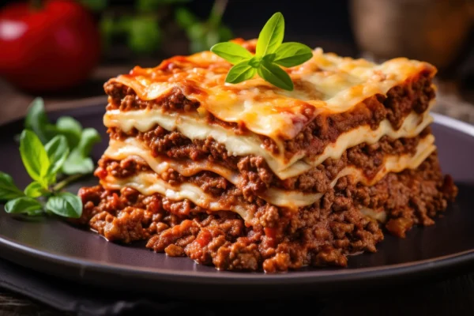

Receitas
Lasanha à Bolonhesa
Quando pensamos em comida, é impossível não lembrar das receitas que atravessam gerações. Hoje, quero compartilhar com vocês a nossa receita de Lasanha à Bolonhesa, um clássico que reúne sabor e tradição.
Ler maisSopa de Legumes

Nada é mais reconfortante do que uma tigela fumegante de sopa de legumes caseira, especialmente quando a receita vem dos cadernos de receitas da vovó. Descubra essa delícia nutritiva e cheia de carinho.
Ler mais